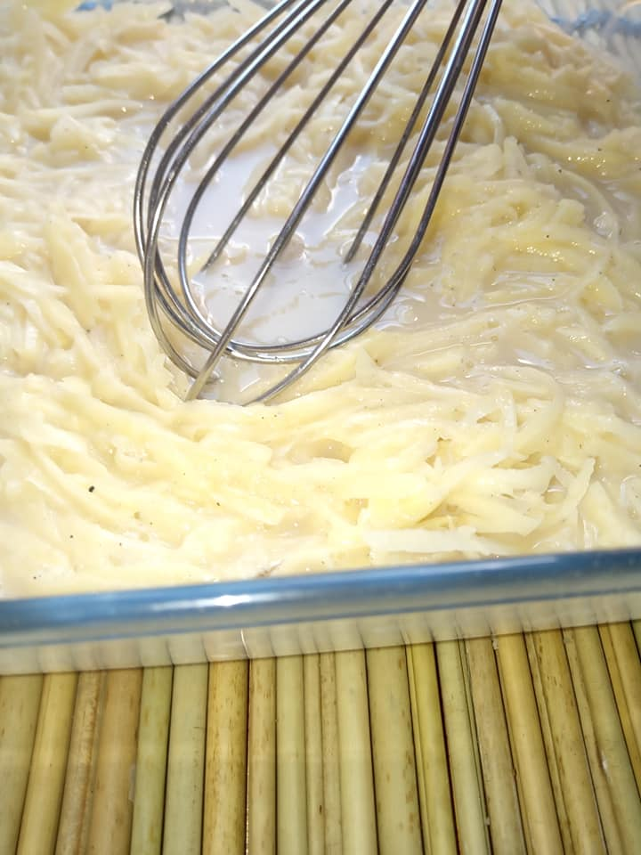

Steps for Preparation
- Grate the raw potatoes in a clean bowl
- Transfer the potatoes on a clean tea towel or kitchen towel ( Reason: gently pat dry and remove starch
- Cover the potatoes with a towel and press both hands to make sure all excess liquid starch removed

- Crack eggs in a bowl
- Add milk
- Add salt to taste
- Season with black pepper(optional)
- Beat the Eggs/ Whisk
- Transfer the pat dried grated potatoes to the beaten eggs
- Use a fork or whisk to gently combine well.
- make sure salt is enough and tasty
- you can add a few spices of your choice

- Heat cooking oil into a pan. Oil should be very hot
- Use spoon to scoop out the potatoe mixture from the mixing bowl
- Use a slicer / egg turner
- Watch till it's ready
- Extras..

(Cooking starts)
Finally